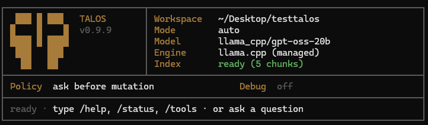

Local smoke check
talos
/status --verboseTALOS / Local CLI workspace operator
Inspects before acting. Asks before mutation. Verifies before claiming success.
Runs locally against the selected workspace. Approved writes only. Interactive turns leave local trace evidence.
Workspace-bounded. Local engine. No hosted workspace handoff.

Talos startup terminal screen: TALOS v0.9.9; Workspace ~/Desktop/testtalos; Mode auto; Model llama_cpp/gpt-oss-20b; Engine llama.cpp (managed); Index ready (5 chunks); Policy ask before mutation; Debug off; ready prompt says type /help, /status, /tools, or ask a question.
Execution contract
Normal assistant turns render through the same semantic lanes. Approval gates mutation. Verification gates success claims.
Resolve the request into a bounded task contract and expected target.
task contract
Expose read-only tools and gather workspace evidence first.
talos.list_dir · talos.read_file · talos.grep · talos.retrieve
Show mutation intent, target path, and risk before any local write.
! approval · [y / a / N]
Run only the approved file, workspace, or command operation.
talos.write_file · talos.run_command
Read back files or check command output before reporting success.
readback · gradle_test · exit codes
Keep prompt, tool calls, approvals, and outcomes inspectable.
/last trace
CLI experience
The terminal grammar is runtime-owned, not model-authored. Normal assistant turns render through the same semantic lanes, so users read a semantic difference, not a rendering-path difference.
Inspect turn selected.
Trust model
Runtime policy owns approval, tool exposure, result checks, protected reads, and unsupported-file honesty. Model wording is not the authority boundary.
default posture: bounded workspace · local engine · approved mutation · checked outcome · local trace
Use cases
Inspect structure and read files before touching anything.
Propose, preview, and apply edits behind explicit approval.
Diagnose selector bugs and confirm the fix on the right file, not a similar one.
Review diffs and changed-file summaries grounded in the trace.
Markdown, JSON/YAML/TOML, CSV, source, and other text-oriented project files.
Test, build, and verification commands routed through configured profiles.
Scanned PDFs, image-only files, PowerPoint, corrupt or encrypted documents, and sensitive personal paperwork remain out of beta positioning.
Install & models
Talos is still tested from source and local beta builds. The
planned public beta target is a one-line Windows install, using
winget or a signed PowerShell bootstrap, followed
by guided local model setup.
Current developer setup remains in the repository docs: build
with Gradle, install locally, then configure managed
llama.cpp model profiles. Those commands are real,
but they are not the release install experience. Unix/macOS
should get a curl-style path later, not a copied local build
script as the product story.
talos
/status --verboseplanned: one-line Windows install
planned: signed artifact + checksum
planned: guided managed llama.cpp setupREADME.md · Quick Start
docs/setup-managed-models.md
tools/install-windows.ps1talos status --verbose/last trace/tools
/models
/workspace/prompt-debug lastDocs
Docs live in the repository. Trust, traces, command execution, and audit workflow each have an architecture document; CLI commands are defined in source.
Current source/developer setup for local beta runs.
README.md · Quick Start
02
Current source installer. Public one-line install is planned.
tools/install-windows.ps1
03
Managed llama.cpp setup and model profiles.
docs/setup-managed-models.md
04
Slash commands and runtime tool surface.
/help · /status · /tools · /workspace · /last trace · /prompt-debug
05
Declarative allow / ask / deny permissions.
docs/architecture/04-declarative-allow-ask-deny-permissions.md
06
Trace model, prompt-debug, local artifact handling.
docs/architecture/03-local-turn-trace-model-v1.md
07
Bounded command profiles and execution architecture.
docs/architecture/10-command-execution-architecture-design.md
08
Milestone and full E2E audit procedures.
work-cycle-docs/full-e2e-audit-workflow.md